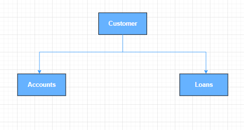
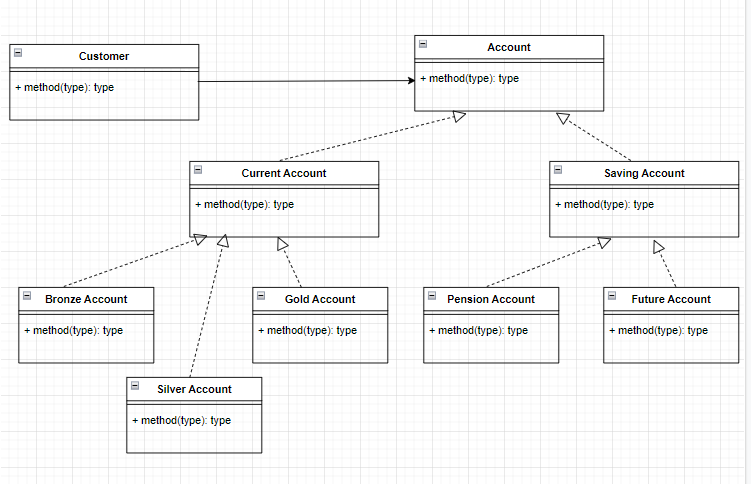
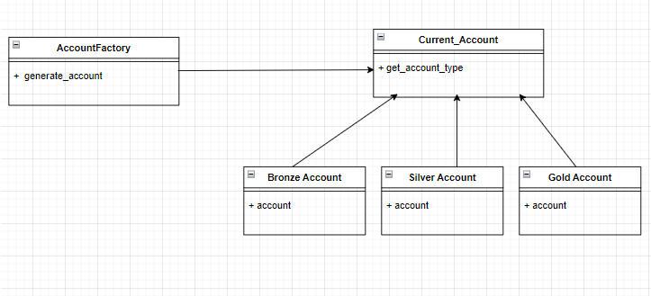
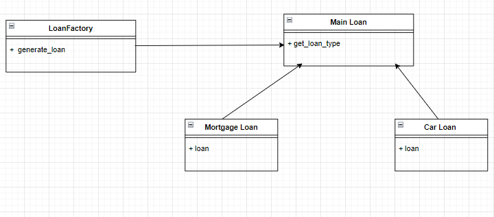
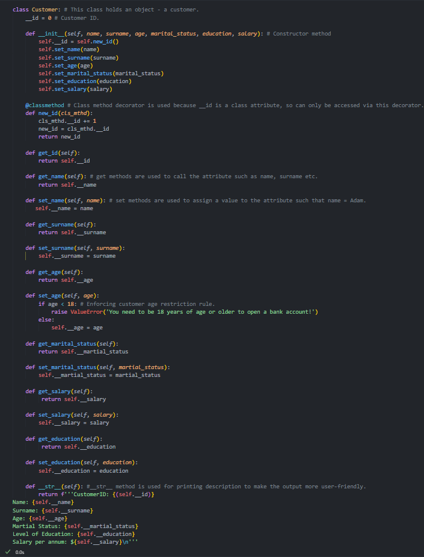
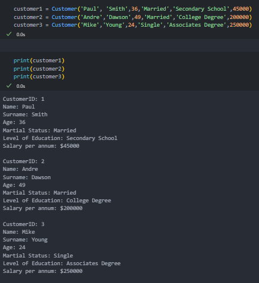

Console-based simulation of core banking operations using object-oriented design.
This terminal-based application simulates a basic banking system built entirely in Python using object-oriented programming (OOP). Users can log in as either customers or admins, create new accounts, deposit or withdraw money, and check balances — all through a secure CLI interface.
• Object-oriented design using classes for `Customer`, `Bank`, and `Account`
• Login system with role-based access for Admin and Customer
• Deposit, withdrawal, balance check, and account creation logic
• Data stored in text files (`customer.txt`) for persistence across sessions
• Modular codebase structured for easy maintenance and scalability
Python, Object-Oriented Programming (OOP), File I/O, CLI
• Designing intuitive class relationships for real-world banking logic
• Implementing persistent file-based storage instead of a database
• Validating inputs to avoid system crashes during runtime
• Ensuring a smooth CLI-based user experience for both roles
This project deepened my understanding of OOP principles such as inheritance and encapsulation. It also gave me hands-on experience building a user-facing system from scratch and simulating real-world functionality with minimal tools.

Figure 1. This diagram shows the core entities in the system — Customers, Accounts, and Loans — and how they relate structurally.

Figure 2. Strategy Pattern UML Diagram demonstrates how different account types inherit behavior and enable runtime flexibility.

Figure 3. Factory Pattern (Accounts): Shows how account types are generated dynamically based on user input.

Figure 4. Factory Pattern (Loans): Similar to accounts, this factory pattern enables creation of different loan types.

Figure 5. Core class definition for `Customer`, including its attributes and methods responsible for account handling.

Figure 6. Output from executing the Customer class — demonstrates real CLI interaction and validation.